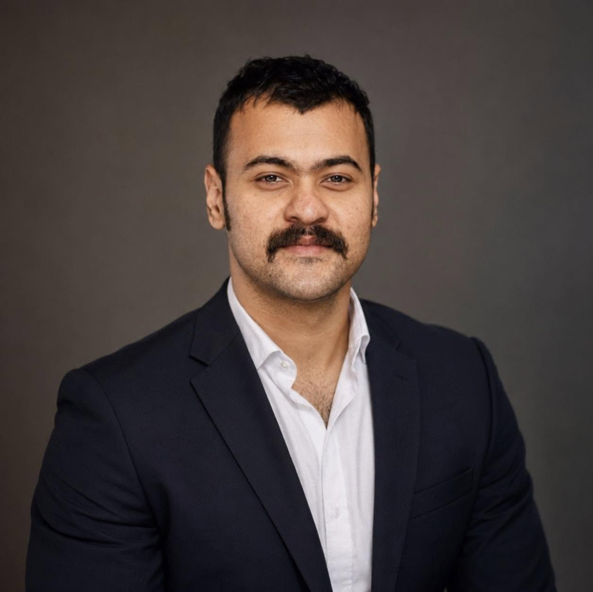

Suvadip Sana
PhD Candidate, Department of Statistics and Data Science, Cornell University
I am a final-year PhD candidate at Cornell University, grateful to be advised by Martin T. Wells, and working closely with Lionel Levine and Moon Duchin. My research sits at the intersection of AI alignment and computational social choice, building mathematically grounded frameworks for understanding and improving how AI systems make decisions under diverse human preferences.
Before Cornell, I completed an M.Math (2021) and B.Math (2019) at the Indian Statistical Institute, Bengaluru.
Research interests
News
- 2026Awarded the ICML 2026 Silver Reviewer Award and the Cornell Bowers CIS Social Impact and Service Award.
- 2026Started as a PiTech Impact Fellow with the NYC Council Data team, building an AI routing system and MCP server for a staff-facing legislative chatbot.
- 2026"EigenBench: A Comparative Behavioral Measure of Value Alignment" accepted to ICLR 2026 as an Oral Presentation (~top 1% of submissions).
- 2026New workshop paper, "Pluralistic Preference Alignment via Sortition-Weighted RLHF," at the ICML 2026 Pluralistic Alignment Workshop.
Selected awards & honors
- 2026ICML 2026 Silver Reviewer Award
- 2026Cornell Bowers CIS Social Impact and Service Award
- 2026Cornell PiTech Impact Fellowship
- 2025Tapia Conference Travel Award ($1,500)
- 2021–2022Cornell PhD Graduate Fellowship